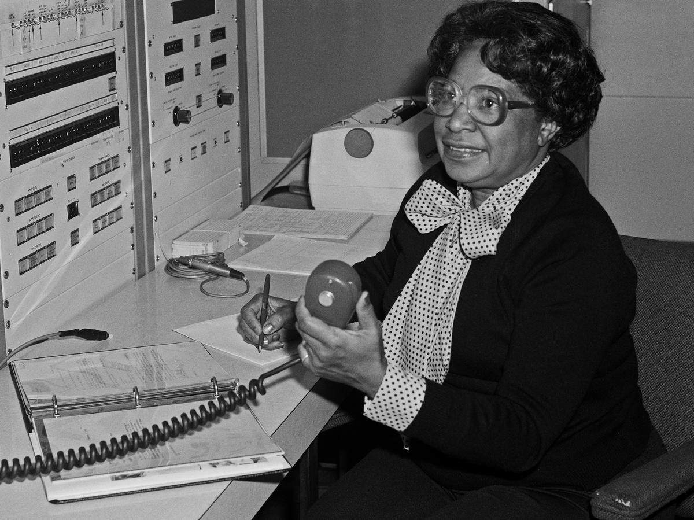

1949 - Dorothy Vaughan devient responsable
Dorothy Vaughan devient responsable du groupe West Area Computing au sein de la NACA, l'organisme qui précède la NASA. Elle devient ainsi la première femme noire à occuper un poste de supervision à la NACA.